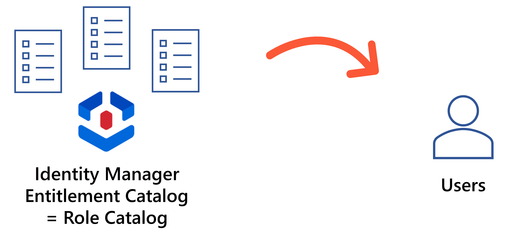
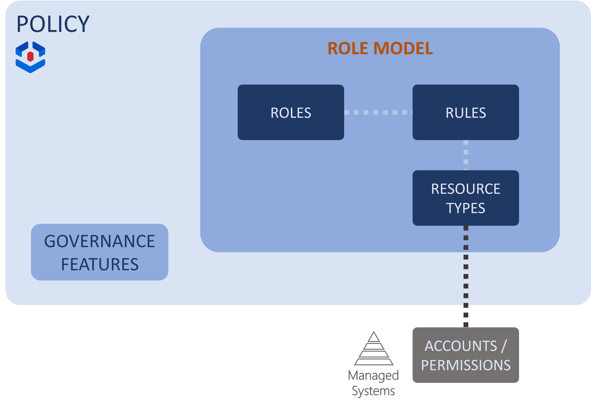
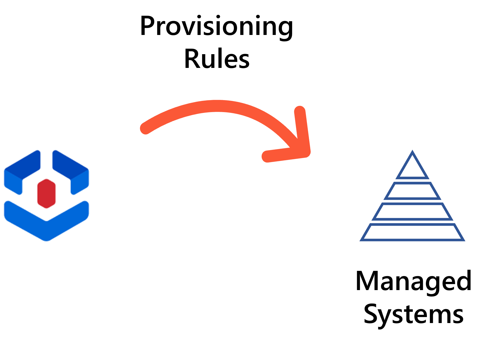
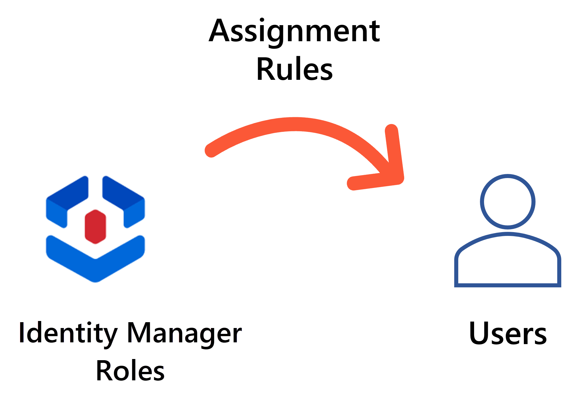
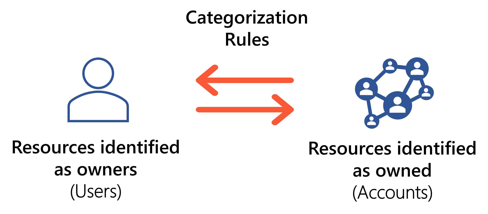

Entitlement Management
Managing identities' entitlements requires managing entitlements and assigning them to identities. This page is about the role model.
Role Model Overview
A managed system's entitlements can have many forms. They authorize identities to access certain data on a given system, or a physical location.
For example, entitlements in the Active Directory are usually group memberships. For example, to have administrator rights in the Iris application, a user must be part of the members of the group
SG_APP_IT/Development/Iris/Administrator.
Identity Manager is designed to help establish an exhaustive and reliable catalog of the entitlements available in the managed systems, and assign the right entitlements to the right users.

Thus, the role model contains:
- the entitlements, as roles, for all managed systems;
- the rules that trigger the assignment of entitlements to identities, and more broadly manage the systems' resources. Some of them act as link between Identity Manager's roles and the systems' accounts and permissions. Some of them are linked to, and thus apply only to, specific resource types.

The role model is a subset of a policy that also includes Governance data such as risk definition. So, at a higher level, distinct policies can be used to implement distinct behaviors.
A Role Catalog
Identity Manager intends to represent IGA-related access right mechanisms by a role-based model. The goal of the role catalog is contain an exhaustive list of entitlements from all managed systems.
Entitlements from the managed systems are modeled by roles. For each entitlement, NETWRIX advises creating a single role, with an easily understandable name, more functional than technical, so that everyone knows what the role is for.
Each individual entitlement should usually be modeled by a single role, and single roles can be grouped together into composite roles to be closer to real job positions.
A Rule Set
Roles alone are not enough to give identities the systems' technical entitlements. We need rules to have Identity Manager write users' entitlements in the managed systems. Rules are further used to automatically assign roles to users, or to categorize users and accounts, etc.
Provisioning rules
Just like identities, accounts are represented in Identity Manager by an Identity Management entity-relationship model. So Identity Manager manages entitlements as resources' attribute values.
For example, giving specific Active Directory permissions to a new user means not only creating a new AD account, but also setting values for certain account properties like
cn,sAMaccountName,userAccountControlordn, etc.
Provisioning rules write the actual entitlements to the managed systems, most often based on users' roles.
For example, to give an AD entitlement to a user, we usually need to give them a group membership. Thus, we should have a rule that, when a user is assigned a specific role, adds the user to the member list of a specific AD group.

Even when a role is manually assigned, provisioning rules will determine which account (and permission groups) are given as entitlements.
Identity Manager's provisioning rules are:
- scalar rules to compute simple string properties;
- navigation rules and query rules to compute properties that act as foreign keys in a database;
- resource type rules to automatically create resources.
Assignment rules
While the role catalog and provisioning rules are together enough to manually give users their access rights, we often want Identity Manager to do this automatically. Assignment rules automatically assign roles to identities based on specific criteria.
For example, we can choose to assign the role
Benefits Manager - FRto any user whose job title is benefits manager and whose location is in France.

Once all assignment rules are created, Identity Manager is able to spot existing assignments that are not supported by any rule, marking them as non-conforming.
Identity Manager's assignment rules are:
- single role rules and composite role rules to assign single and composite roles;
- resource type rules to assign accounts.
Categorization rules
Different resources can be managed through different rules, by being part of different resource types. So a resource type is a group a resources that have the same IGA-related purposes. Categorization rules categorize resources into resource types and link identities to the accounts they own.
For example, we might need to differentiate AD's standard accounts from administration accounts. This way, we can configure different email addresses for privileged accounts, for example adm.john.smith@contoso.com. We can also add more approval steps in the workflows related to privileged accounts, for more security than for standard accounts.

Identity Manager's categorization rules are:
- correlation rules to link identities to the accounts they own;
- classification rules to categorize resources into resource types.
More rules
Identity Manager provides more kinds of rules for optimization purposes, for example role naming conventions to help build the role catalog by generating roles and navigation rules based on the entitlements' names, or automation rules to help with governance by automating the review of the assignments that do not comply with the configured rules.
Dimensions
Rules can be triggered based on users' assigned roles, but also based on user data.
The Identity Management model can be refined by configuring dimensions: criteria from among resources' attributes that will trigger the application of the rules. Then Identity Manager applies the rule for any resource whose value for a given attribute matches the reference value specified in the rule.
For example, a user can be assigned the role
Benefits Manager - FRonly if their job title is benefits manager and their location is in France. In this case, users' attributes "job title" and "location" are the dimensions that trigger the assignment rule.
In a nutshell, dimensions determine who should be assigned the entitlements.
Identity Manager's name and logo are based on this dimension concept: entitlement assignment is governed by users' attributes defined as dimensions. Let's schematize users around these dimensions:
- The schema for this with one dimension would be a line with all available values for the dimension, and identities are distributed along the line.
- The schema with two dimensions would be a table, a square.
- The schema with three dimensions would be a 3D cube. And you can imagine 4D or 5D hypercubes, etc.
1D
2D
Next Steps
See the Governance topic for additional information.
Learn More
Learn more on the Role Model .
Learn how to Create Roles in the Role Catalog .
Learn more on hoe to Create a Composite Role.
Learn more on Role Assignment.
Learn more on Create a Provisioning Rule .
Learn more on Automate Role Assignments rules.
Learn more on the rules of Categorize Resources .